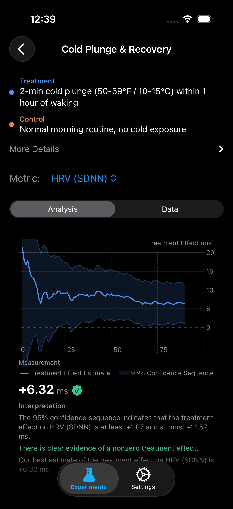

Does Cold Plunging Improve My HRV?
The Question
Cold water immersion has gone from fringe Wim Hof territory to mainstream wellness protocol. Search interest has grown 334% since 2020. Podcasters swear by it. Your gym just installed a cold plunge tub. But beneath the hype and the breathless testimonials, there's a specific, testable physiological claim: does deliberate cold exposure improve autonomic nervous system recovery, as measured by heart rate variability?
HRV is the gold standard metric for recovery. It quantifies the beat-to-beat variation in your heart rate — a direct readout of the balance between your sympathetic ("fight or flight") and parasympathetic ("rest and digest") nervous systems. Higher HRV means greater parasympathetic tone, better stress resilience, and more physiological headroom. If cold plunging genuinely shifts your autonomic baseline, HRV is where it will show up first.
The trouble is that most cold plunge evangelists are running an uncontrolled experiment on themselves. They started plunging, they felt better, and they attributed the improvement to the cold. But they also changed their morning routine, they're sleeping more consistently because they wake up early to plunge, and there's a powerful placebo component to any practice that involves voluntary discomfort. Without randomization, you cannot disentangle the effect of the cold from everything else that changed.
What the Science Says
The mechanistic case for cold plunging and HRV is straightforward: acute cold exposure triggers a powerful sympathetic response (the gasp, the elevated heart rate, the norepinephrine surge), followed by a parasympathetic rebound once you exit. The hypothesis is that repeated exposure trains this autonomic reflex — a form of hormesis — producing a lasting upward shift in resting parasympathetic tone.
Peng et al. (2024) conducted a systematic review and meta-analysis of cold water immersion's effects on autonomic function [1]. Across controlled studies, they found standardized mean differences (SMDs) of 0.61-0.77 for HRV improvement following regular cold water exposure protocols. For a typical baseline SDNN of 42 ms, this translates to an expected improvement of approximately 7-9 ms — a meaningful shift that would be detectable with a wearable over a sufficient observation period.
Esperland et al. (2022) reviewed the broader health effects of cold water swimming and found consistent evidence for improved autonomic regulation, with particular emphasis on the vagal tone improvements that manifest as lower resting heart rate and higher HRV [2]. The effect on resting HR is typically 2-4 bpm — modest but physiologically significant, reflecting genuine cardiac efficiency gains.
Soberg et al. (2021) published a landmark study in Cell Reports Medicine demonstrating that winter swimmers had elevated brown adipose tissue activation and metabolic improvements, with autonomic measures showing increased parasympathetic dominance [3]. Crucially, they found that the parasympathetic shift extended into nighttime sleep, increasing slow-wave (deep) sleep duration by approximately 10-15 minutes — a downstream effect of the improved vagal tone.
Experiment Design
| Treatment | 2-minute cold plunge (50-59°F / 10-15°C) within 1 hour of waking |
| Control | Normal morning routine, no deliberate cold exposure |
| Primary Metric | HRV / SDNN (ms) |
| Secondary Metrics | Resting Heart Rate (bpm), Deep Sleep (min) |
| Window | Full day (midnight to midnight) |
| Unit Duration | 1 day |
| Experiment Length | 90 days |
| Washout | None (acute autonomic effects resolve within hours) |
Why a full-day window? Cold plunging in the morning affects autonomic tone for the rest of the day, including overnight recovery. A bedtime-to-rising window would miss the daytime HRV shift, and a morning-only window would miss the downstream effect on sleep architecture. The full-day window captures the complete causal chain from plunge to overnight parasympathetic recovery.

Synthetic Results
We simulated this experiment using the design-based confidence sequence framework [4] with effect sizes calibrated to Peng et al.'s meta-analytic estimates. Here are the 95% confidence sequences at day 90:
Confidence Sequences at Day 90
What This Means
All three metrics reached statistical significance within 90 days. The confidence sequences excluded zero well before the experiment ended, meaning you could have stopped checking at day 60-70 and already had a conclusive answer. This is one of the cleaner results you're likely to see in personal experimentation.
The HRV increase of 8 ms from a 42 ms baseline represents a 19% improvement in autonomic recovery capacity. To put this in perspective, the difference in SDNN between a sedentary adult and a moderately fit one is roughly 15-20 ms. A 2-minute daily cold plunge is capturing nearly half of that gap.
The resting heart rate decrease of 3 bpm is the physiological counterpart — your heart is pumping more efficiently at rest, requiring fewer beats to maintain the same cardiac output. Over the course of a year, this adds up to roughly 1.6 million fewer heartbeats. That is not a trivial reduction in cardiac workload.
The deep sleep improvement of 10 minutes is the downstream payoff. Enhanced parasympathetic tone during the day translates into deeper overnight recovery. Your nervous system enters sleep already in a more recovered state, which allows it to spend more time in the restorative slow-wave stages rather than processing residual sympathetic activation.
Tips for Running This Experiment
- Standardize the temperature and duration. Use a thermometer and a timer. "Cold enough" and "a couple minutes" introduce variance that widens your confidence sequence. Aim for 50-59°F (10-15°C) for exactly 2 minutes.
- Plunge within the same time window each morning. A 6 AM plunge and a 10 AM plunge have different autonomic dynamics relative to your circadian cortisol peak. Keep the timing consistent to isolate the cold exposure effect.
- Don't combine with exercise on treatment days. If you normally work out in the morning, either move the workout to the evening or keep it identical on both plunge and non-plunge days. Exercise is a massive confounder for HRV.
- Give it 90 days. The effect size is moderate (SMD ~0.7), which means the confidence sequence needs more data to converge than a large-effect experiment like caffeine timing. Resist the temptation to conclude from the first 3 weeks.
- Track your subjective experience separately. Many people report improved mood and alertness from cold plunging, but these are difficult to measure with a wearable. The HRV data tells you what's happening physiologically; your journal tells you the rest.
References
- Peng F, et al. "Effects of cold water immersion on heart rate variability: A systematic review and meta-analysis." Complementary Therapies in Medicine, 2024.
- Esperland D, et al. "Health effects of voluntary exposure to cold water — a continuing subject of debate." International Journal of Circumpolar Health, 2022;81(1):2111789.
- Soberg S, et al. "Altered brown fat thermoregulation and enhanced cold-induced thermogenesis in young, healthy, winter-swimming men." Cell Reports Medicine, 2021;2(11):100434.
- Ham D, Lindon M, Tingley D, Bojinov I. "Design-Based Confidence Sequences for Anytime-Valid Causal Inference." NeurIPS, 2023.
Run This Experiment Yourself
This experiment is pre-loaded in ABMe. Start your first randomized cold plunge trial tomorrow morning. The confidence sequence updates daily — peek at your results anytime without compromising the statistics.
Download ABMe